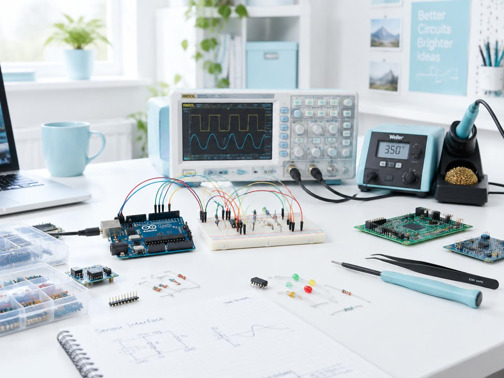

SECOND-YEAR EXTC STUDENT · MUMBAI
Vidhisha Bhosale
Electronics & Telecommunication Engineering Student · VLSI & Semiconductor Enthusiast
I'm a B.Tech EXTC student passionate about electronics, VLSI, semiconductors, and hardware technologies. I enjoy turning ideas into practical circuits and continuously expanding my knowledge through projects, experimentation, and hands-on learning.

About me
Engineering curiosity, powered by creativity.
Vidhisha is a second-year B.Tech Electronics and Telecommunication Engineering student at Dwarkadas J. Sanghvi College of Engineering, Mumbai.
Her focus spans VLSI, semiconductor technology, electronics, circuit design, embedded systems, digital design, and hardware development. Through Arduino and Tinkercad projects, she is building practical experience while learning Verilog, Vivado, and LTspice.
Academic journey
A strong foundation for what comes next.
Consistent academic performance paired with a growing focus on electronics and hardware.
Skills
Technical foundations. Creative perspective.
Skills built through coursework, personal exploration, projects, and college committees.
Technical Skills
Currently Exploring
Creative Skills
Professional Skills
Projects
Projects & Engineering Experiments
Small systems, practical lessons, and a growing understanding of how hardware ideas become working prototypes.
In Progress
Smart Walking Stick for Blind People
An assistive college IPD project that helps visually impaired people detect obstacles and improve mobility, tested in Tinkercad and as a real prototype.
Completed
Arduino-Based Piano
An interactive piano built to explore input handling, electronic components, and sound generation.
Completed
Password-Protected Security System
A password-based access system exploring authentication and embedded-system logic.
Experience & leadership
Learning to lead, create, and collaborate.
College roles that have strengthened communication, responsibility, teamwork, and creative execution.
2026–27
DJS MicroMinds
Creatives & Outreach Committee
- Created social media and promotional content
- Contributed creative ideas for events and campaigns
- Supported audience engagement, outreach, and collaborations
- Helped promote initiatives and grow community reach
2026–27
DJS Trinity
Creatives Committee
- Designed promotional materials and social content
- Contributed to event branding and visual communication
- Collaborated to maintain a consistent visual presence
2025–26
TEDxDJSCE
Production Volunteer
- Assisted with event setup and backstage coordination
- Supported on-ground activities across teams
- Gained hands-on event production and teamwork experience
2025–2029
DJ Sanghvi College of Engineering
Class Representative
- Acts as a bridge between students and faculty
- Communicates updates, concerns, and academic activities
- Supports class events and collaborative responsibilities
Certifications & learning
Curiosity beyond the classroom.
Mathematics for Machine Learning: Linear Algebra
Coursera
Advanced Machine Learning, Neural Networks, and NLP
Coursera / John Wiley & Sons
PCB Design Workshop
IEEE DJSCE
UI/UX Workshop
DJSCI
Google Pitch Night
Google Student Ambassador — DJSCE
Google Freshers Night
Google Student Ambassador — DJSCE
ContactLet's Connect &
Let's Connect &
Create Something.
Whether it's electronics, VLSI, creative projects, or collaboration, I'm always open to learning, building, and connecting.